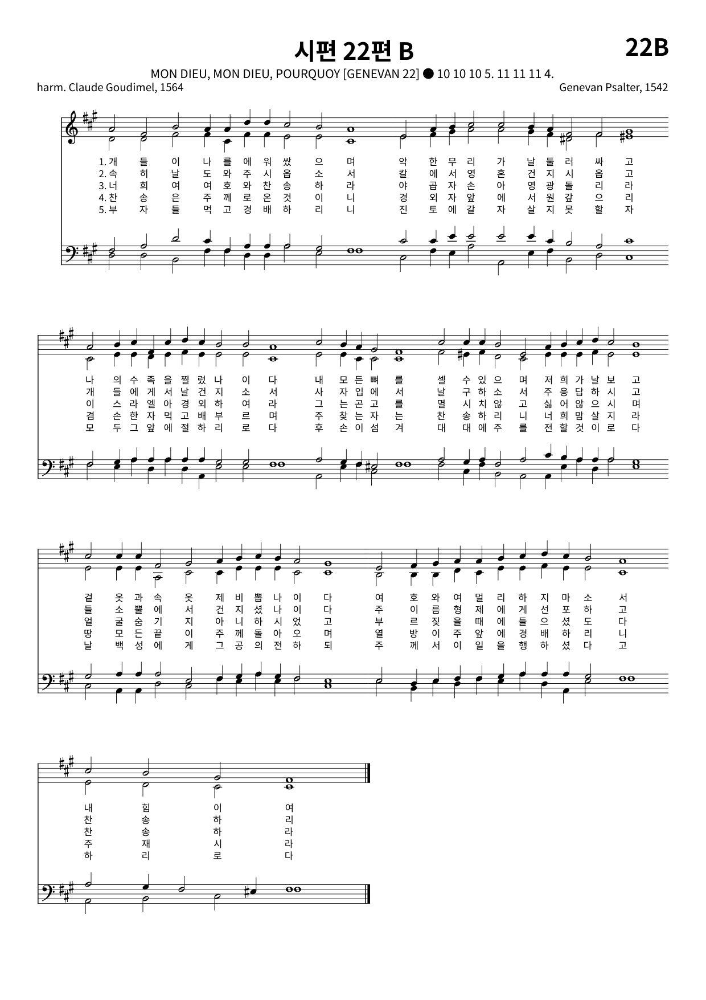

Psalm 22B
MON DIEU, MON DIEU, POURQUOY [GENEVAN 22] · 10 10 10 5. 11 11 11 4.
English title: My God, O Why Hast Thou Forsaken Me?
Tune: Genevan Psalter, 1542 · Harmony: Claude Goudimel, 1564 · Lyrics: Korean adaptation of Psalm 22 from the Korean Revised Version (AI draft adaptation · not yet theologically reviewed) · 5 stanzas
Psalm 22 is divided into 2 tunes: A B · This tune contains stanzas 6–10 of the Psalm 22 lyrics.
Score PDF MusicXML (for printing) MusicXML (for accompaniment, with prelude and repeats) Read Psalm 22 (Korean Revised Version)
Score
← Psalm 22A ListAccompaniment (in preparation)Psalm 23 →
Lyrics (Korean)
Stanza 1
개들이 나를 에워쌌으며
악한 무리가 날 둘러싸고
나의 수족을 찔렀나이다
내 모든 뼈를
셀 수 있으며 저희가 날 보고
겉옷과 속옷 제비뽑나이다
여호와여 멀리하지 마소서
내 힘이여
개들이 나를 에워쌌으며
악한 무리가 날 둘러싸고
나의 수족을 찔렀나이다
내 모든 뼈를
셀 수 있으며 저희가 날 보고
겉옷과 속옷 제비뽑나이다
여호와여 멀리하지 마소서
내 힘이여
Stanza 2
속히 날 도와 주시옵소서
칼에서 영혼 건지시옵고
개들에게서 날 건지소서
사자 입에서
날 구하소서 주 응답하시고
들소 뿔에서 건지셨나이다
주 이름 형제에게 선포하고
찬송하리
속히 날 도와 주시옵소서
칼에서 영혼 건지시옵고
개들에게서 날 건지소서
사자 입에서
날 구하소서 주 응답하시고
들소 뿔에서 건지셨나이다
주 이름 형제에게 선포하고
찬송하리
Stanza 3
너희여 여호와 찬송하라
야곱 자손아 영광 돌리라
이스라엘아 경외하여라
그는 곤고를
멸시치 않고 싫어 않으시며
얼굴 숨기지 아니하시었고
부르짖을 때에 들으셨도다
찬송하라
너희여 여호와 찬송하라
야곱 자손아 영광 돌리라
이스라엘아 경외하여라
그는 곤고를
멸시치 않고 싫어 않으시며
얼굴 숨기지 아니하시었고
부르짖을 때에 들으셨도다
찬송하라
Stanza 4
찬송은 주께로 온 것이니
경외자 앞에 서원 갚으리
겸손한 자 먹고 배부르며
주 찾는 자는
찬송하리니 너희 맘 살지라
땅 모든 끝이 주께 돌아오며
열방이 주 앞에 경배하리니
주재시라
찬송은 주께로 온 것이니
경외자 앞에 서원 갚으리
겸손한 자 먹고 배부르며
주 찾는 자는
찬송하리니 너희 맘 살지라
땅 모든 끝이 주께 돌아오며
열방이 주 앞에 경배하리니
주재시라
Stanza 5
부자들 먹고 경배하리니
진토에 갈 자 살지 못할 자
모두 그 앞에 절하리로다
후손이 섬겨
대대에 주를 전할 것이로다
날 백성에게 그 공의 전하되
주께서 이 일을 행하셨다고
하리로다
부자들 먹고 경배하리니
진토에 갈 자 살지 못할 자
모두 그 앞에 절하리로다
후손이 섬겨
대대에 주를 전할 것이로다
날 백성에게 그 공의 전하되
주께서 이 일을 행하셨다고
하리로다